保留作业位置，等待题目与课程材料Reserved for the Test 3 prompt and course materials
录入后将沿用“物理图像—方程—观测证据—成立条件—常见误区”的统一模板。Future content will follow the shared template: physical picture, equations, observations, validity conditions, and common pitfalls.
网站重构为课程内容、课程作业和方法实验室三条路径。每条路径逐层展开，并保留中英双语、进度记录和检索练习。The site is organized into Course Content, Assignments, and the Methods Lab. Each path reveals detail progressively and keeps bilingual study, progress, and retrieval practice together.
知识框架、教材图片库、课堂问答与出门票。Knowledge map, textbook figures, course questions, and exit tickets.
进入课程内容 →Open course content →02 · ASSIGNMENTS课程作业Course assignmentsTest 1–3 与 Video Story 统一归档；当前重点为 Test 2。Test 1–3 and Video Story in one place, with Test 2 currently featured.
进入作业中心 →Open assignments →03 · METHODS方法实验室Methods laboratoryT_TIDE · EOF · RAWGraphs
进入实验室 →Open methods lab →作业集中在一个版块中，并通过标签切换，避免题目、答案和视频材料同时挤满页面。沿岸俘获波视频与 19 页课件共同组成 Video Story。All assessed work lives in one section and uses tabs to avoid crowding. The coastal-trapped-wave video and 19-slide deck form one Video Story.
录入后将沿用“物理图像—方程—观测证据—成立条件—常见误区”的统一模板。Future content will follow the shared template: physical picture, equations, observations, validity conditions, and common pitfalls.
Coastally Trapped Waves，简称 CTWs。它们受海岸边界、地球自转和大陆架地形共同约束，主要沿海岸方向传播，可表现为沿岸水位、流速和温度的低频变化。
“沿着大陆架传播，并在离岸方向迅速衰减的低频海洋波动。”
图示核心范围约为一周至一个月，具体尺度取决于激发机制、地形和层结。
能量沿岸传播，离岸结构受陆架宽度、坡度和变形半径控制。
“海面有起伏”并不意味着它们都属于通常所说的表面波。区分时间尺度、空间尺度和主要控制机制，才能为数据采样和模型设计选择合适的目标。
研究量：有效波高、周期和波向。通常对应风浪与涌浪，是近岸海浪预测的直接对象。
研究量：潮位和潮流。天文潮可通过分潮进行调和分析与预报。
研究量：沿岸低频水位与流速异常。CTWs 不等同于风浪，也不等同于天文潮。
视频用于快速建立直观认识，课件继续展开控制方程、模态结构、层结与摩擦效应；两者共同组成沿岸俘获波 Story 的学习材料。
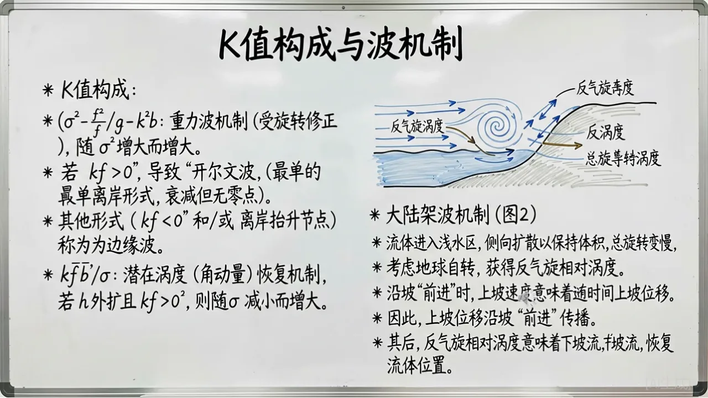
在线预览为图片形式；轻量 PPTX 保留全部 19 页视觉内容，不含内嵌旁白。
下载轻量版 PPTX教材图片库和出门票都属于课程内容；知识组织遵循“观测 → 状态变量 → 主导平衡 → 波动与环流 → 复习检索”。The textbook figure library and exit tickets are course content. The learning sequence is observations, state variables, dominant balances, waves and circulation, then retrieval practice.
从牛顿第二定律出发，逐步加入旋转、层结、摩擦、边界和浮力强迫。点击节点查看它在整章中的作用。Start from Newton's second law, then add rotation, stratification, friction, boundaries, and buoyancy forcing. Open each node to see its role in the chapter.
区分局地加速度、平流加速度、压强梯度、重力、科氏力与黏性耗散；所有后续“平衡”都是从完整动量方程中选择主导项。Separate local and advective acceleration, pressure gradient, gravity, Coriolis acceleration, and viscous dissipation. Every later balance selects dominant terms from this full equation.
温度与盐度通过平流、扩散和边界通量演化，再由状态方程决定密度与层结；混合层把表面强迫连接到海洋内部。Temperature and salinity evolve through advection, diffusion, and boundary fluxes, then set density and stratification through the equation of state. Mixing layers connect surface forcing to the ocean interior.
风应力通过摩擦边界层驱动流动；Ekman 输运的辐合、辐散与风应力旋度进一步连接上升流、下沉流和盆地尺度响应。Wind stress drives flow through a frictional boundary layer. Convergence, divergence, and wind-stress curl connect Ekman transport to upwelling, downwelling, and basin-scale response.
压强梯度力与科氏力平衡。动力高度、海面高度和两层海洋建立水平压强场；热成风把密度梯度与地转流垂向切变连接起来。本节点直接对应 Test 2。Pressure-gradient and Coriolis terms balance. Dynamic height, sea-surface height, and two-layer models describe the horizontal pressure field, while thermal wind links density gradients to vertical shear. This node directly supports Test 2.
Test 2 →位涡守恒把旋转、层结、水深和纬度变化统一起来；变形半径决定边界波和涡旋的重要水平尺度，地转流不稳定性解释能量如何进入中尺度。Potential-vorticity conservation unifies rotation, stratification, depth, and latitude changes. The deformation radius sets key scales for boundary waves and eddies, while instability explains energy transfer into the mesoscale.
风应力旋度控制内区输运；Stommel 与 Munk 理论解释西边界强化，东边界则连接沿岸上升流。赤道区需重新处理 f 接近零及 Bjerknes 反馈。Wind-stress curl controls interior transport. Stommel and Munk theories explain western intensification, while eastern boundaries connect to coastal upwelling. The equatorial regime requires special treatment as f approaches zero and Bjerknes feedback emerges.
表面失热、盐度变化和跨密度混合改变水体密度，形成深层水并维持深海翻转；与风驱环流共同构成全球海洋环流。Surface heat loss, salinity change, and diapycnal mixing alter density, form deep waters, and maintain abyssal overturning alongside wind-driven circulation.
以下内容对应课件中的 9 个问题。答案先给可直接复述的结论，再说明物理原因、数量级与限定条件。
Upper-ocean structure · Questions 1–7
简答：风和波浪维持的混合层通常为数十米，常见约 25–100 m，全球定义和观测中常落在 25–200 m。冬季表面失热造成对流混合时可加深到数百米；在拉布拉多海、北欧海和南大洋等深对流区，极端情况下可超过 1000 m。
混合层深度必须附带判据，例如相对 10 m 的温度差或密度差阈值。东海陆架还受水深限制，浅海中可直接混合至海底。
北太平洋中层约数百米还常见北太平洋中层水的盐度极小；实际剖面随季节、经度和水团路径变化。
主要位于约 15°–35° 的副热带高压带和副热带环流区，其中副热带北大西洋、南大西洋最明显，北太平洋和南太平洋副热带也为净蒸发区；地中海、红海和阿拉伯海等干燥海域尤其突出。相反，ITCZ、季风强降水区以及许多高纬海区通常降水大于蒸发。
控制量是淡水收支 E − P（必要时还要加入河流与融冰）。副热带下沉气流少云少雨、湿度低并伴随信风，因此蒸发增强。
核心项包括：海表净热通量、水平平流、混合层底的卷入/脱离、垂向湍混合与扩散，以及穿透到混合层底以下的短波辐射。锋面和涡旋区还应保留次网格或涡旋热输送。
其中 Qnet = Qs + Qb + Qe + Qh。必须同时说明混合层深度 h、卷入速度 we 和通量符号约定。
北大西洋平均更咸。主要原因是大西洋的蒸发相对降水更强，且大气把水汽从大西洋跨越中美洲和非洲输送到太平洋与印度洋，留下较高盐度；地中海高盐出流水也会抬高北大西洋中层盐度。较高盐度有利于北大西洋高纬水体增密和深水形成。
最大：中高纬海区，尤其西边界流延伸体、季风海区和部分边缘海。这里太阳辐射和风暴活动季节变化大，夏季浅而暖、冬季深而冷。
最小：低纬暖池和赤道附近开阔海域的年循环通常较弱；深层海洋季节变化更小。但赤道冷舌、上升流区和季风控制区是低纬例外。
① 风驱通风与俯冲：表层水在等密度面露头区获得温盐性质，随后在副热带 Ekman 辐合和下沉作用下沿等密度面进入海洋内部；平流把表面浮力强迫形成的暖、轻水体结构输送到主温跃层。
② 上升流—跨密度扩散平衡：内部湍混合把热量缓慢向下扩散，同时大尺度上升流把冷的深层水向上输送，两者共同维持温跃层的有限厚度和垂向温度梯度。
这两项分别对应“通风温跃层”和“扩散温跃层”的经典解释；真实海洋中二者并存，表面加热/冷却提供浮力边界条件。
Air–sea heat flux · Qs, Qb, Qe and Qh
下表采用进入海洋为正，给出代表性的年平均气候态范围。若课件使用“向上为正”，Qb、Qe 和 Qh 的符号需要整体反转。
| 分量 | 典型年平均范围 | 最强中心 | 最弱中心 |
|---|---|---|---|
| Qs | 约 +40～+300 | 低纬、少云的热带—副热带海洋，约 +250～+300 | 季节性海冰区和高纬冬季，年平均常低于 +50 |
| Qb | 约 −20～−110 | 最强失热位于暖、干、少云的副热带海域，约 −80～−110 | 湿润多云的 ITCZ 或寒冷高纬，约 −20～−50 |
| Qe | 约 0～−250 | 湾流、黑潮及干燥强风海域，约 −150～−250；冬季月平均可超过 −300 | ITCZ、弱风湿润区和海冰区，接近 0～−30 |
| Qh | 约 +10～−80 | 湾流和黑潮冬季冷空气爆发区，年平均约 −40～−80，天气尺度可低于 −100 | 冷舌或沿岸上升流上空暖空气平流区，可接近 0 或略为正 |
“极值中心与数值”不是普适常数。精确作答应注明数据集（如 OAFlux、ERA5 或 NOC）、平均时段、网格分辨率及海冰掩膜；西边界流的粗网格产品往往低估峰值。
对应《描述性物理海洋学》作业 Test 1 的三道题：先给可直接复述的结论，再补物理机制与公式；全球图与剖面由 WOA23 真实温盐数据计算。
Main topics of physical oceanography
一句话概括：物理海洋学以质量、动量、热量和盐量四大守恒定律为基础，研究海水性质与运动的分布、变化及其与大气、海底的相互作用，尺度覆盖从湍流混合到全球环流。
这些主题与本站知识框架的 8 个章节一一对应；近岸应用（如东海的波浪、潮位与环流预测）同样建立在以上主题之上。
Vertical stratification · T–S–ρ relationship
结论：上层海洋自上而下为混合层 → 季节温跃层 → 永久温跃层 → 深层；密度 σ₀ 随深度单调增大，这正是稳定层结的基本特征。
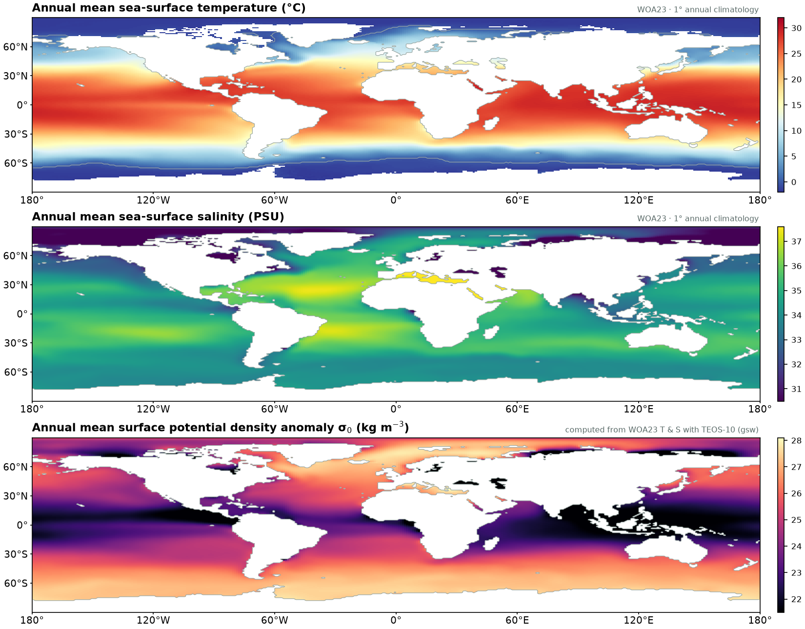
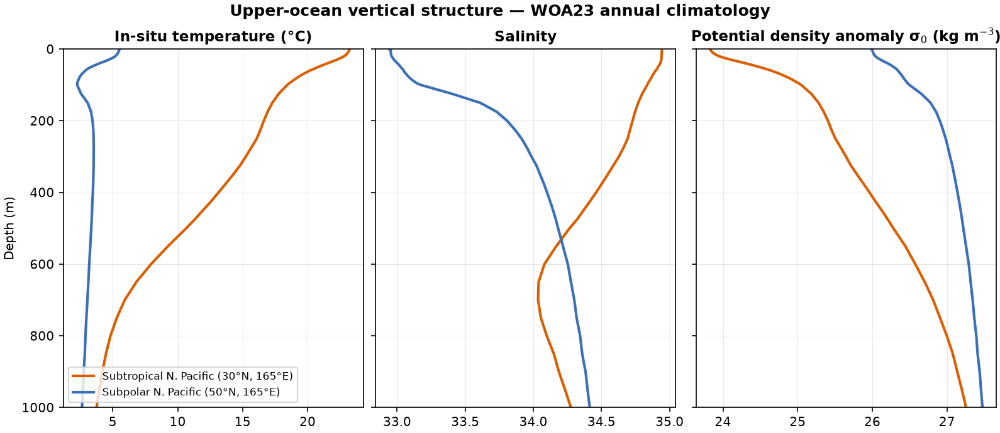
Surface cooling / salinification → convection
结论：冷却带走热量、蒸发或结冰留下盐分，都使表层水变密。一旦表层密度接近甚至超过下层水体，密度层结失去稳定（N² ≤ 0），负浮力驱动流体翻转，形成穿透式的对流混合，直到混合出一个新的均匀层、重新建立稳定层结为止。
反过来，表面加热、降水或融冰使表层变轻，层结被进一步加强（浮力盖），对流被抑制——这正是夏季层结最强、混合层最浅的原因。
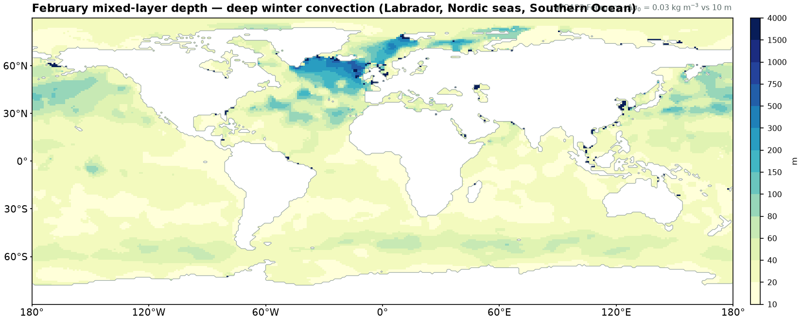
先比较温度、盐度和海流的观测方法，再用地转平衡、静力关系与热成风解释怎样从密度或海面高度推断海流，以及这种推断何时成立。Compare methods for observing temperature, salinity, and currents, then use geostrophic, hydrostatic, and thermal-wind balances to explain how density or sea-surface height can imply currents—and when that inference is valid.
Ekman 流、潮流、惯性振荡、内波、强锋面、急流弯曲以及近岸或底边界摩擦都会使观测流速偏离纯地转流。Ekman flow, tides, inertial oscillations, internal waves, strong fronts, curved jets, and coastal or bottom friction can make observed velocity depart from purely geostrophic flow.
地球自转的局域旋转率。30°N 处 f ≈ 7.3×10⁻⁵ s⁻¹；赤道 f = 0，是地转近似的天然失效区。
压力梯度力与科氏力相互抵消。流速沿等压线流动：北半球背流而立高压在右，南半球相反。
某深度压力 = 上覆水柱重量。它把等压面起伏与密度分布连接起来，是从温盐推算流速的桥梁。
地转 + 静力消去压力后的必然结果：水平密度梯度 ↔ 流速垂直切变。等密度面越斜，切变越强。
经典动力方法：T/S 剖面 → 比容异常 δ → 动力高度 η → 水平差分得相对参考面的地转流。
惯性项与科氏项之比。Ro ≪ 1（大尺度、缓变运动）地转平衡才成立；Ro→1 需要完整动量方程。
结论：对水平尺度 L ~ 100 km、时间尺度超过一天的缓变流动，加速度项与科氏项之比 Ro = U/(fL) ≪ 1，动量方程退化为压力梯度力与科氏力的二力平衡：海流不再“从高压流向低压”，而是沿等压线流动——北半球背流而立高压在右，南半球相反。
用数量级检验：湾流 U ≈ 1 m/s、L ≈ 100 km，取 f ≈ 10⁻⁴ s⁻¹，得 Ro ≈ 0.1；惯性项确实只是小修正。只有接近赤道（f→0）、强锋面（L 小）或摩擦边界层内，平衡才被打破。
结论：经典动力方法分四步：① 由 T/S 与状态方程得到逐层密度（比容异常 δ）；② 沿垂向积分静力方程，得到等压面起伏即动力高度 η（公式 F5）；③ 对 η 做水平差分得地转流速；④ 参考面 pref（如 1500 dbar）处流速未知，故结果为相对流速——这正是 F4 热成风的积分形式。
下图即用 WOA23 年均温盐按此流程算出的全球结果：湾流、黑潮与南极绕极流清晰可辨。若再叠加卫星测高的绝对海面高度，则可得到绝对地转流。
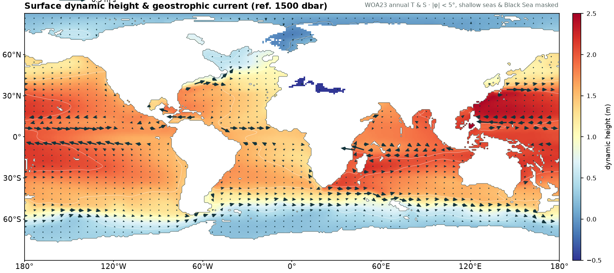
结论：把地转平衡（F2）与静力平衡（F3）联立消去压力，得到流速垂直切变与水平密度梯度的锁定关系（F4）。它是大气“热成风”在海洋的对应物：密度水平梯度越大、等密度面越倾斜，上下层流向差异越大——这样的海洋称为斜压海洋。
读图要点：165°E 断面上等密度面自副热带向副极地显著抬升，意味着上层存在向北（极向）的地转切变——副极地低盐水“骑”在暖咸水之上，流速随深度快速衰减。
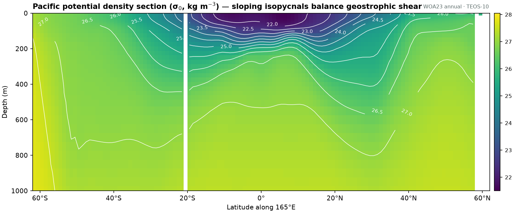
结论：四种典型情形需要超越地转近似：
实践中先做尺度分析（F6）再选方程：Ro ≪ 1 用地转流近似，Ro ~ 1 保留非线性项——这也是判读数值模式与观测资料时最基本的“体检”。
五张经典课件图的读图方法：从等密度面坡度到流向判断，再到卫星观测与定量计算。
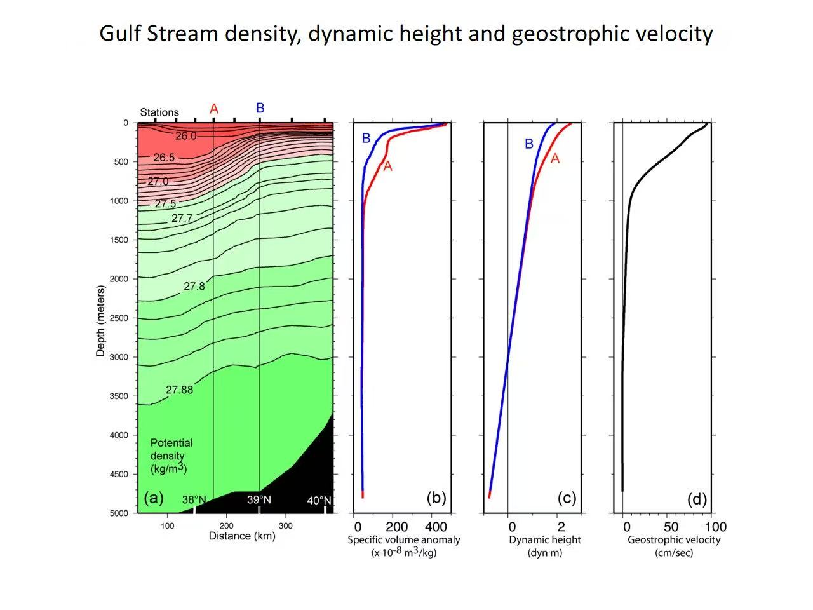
这是全套图里最需要会读的一张。判断流向分五步，步步有依据：
记忆钩子：等值线是轨道，疏密给速度，右手定方向（北半球高值永远在你的右手边）。垂向结构图同理：等密度面下倾方向配合 f 的正负即可定流速切变方向。
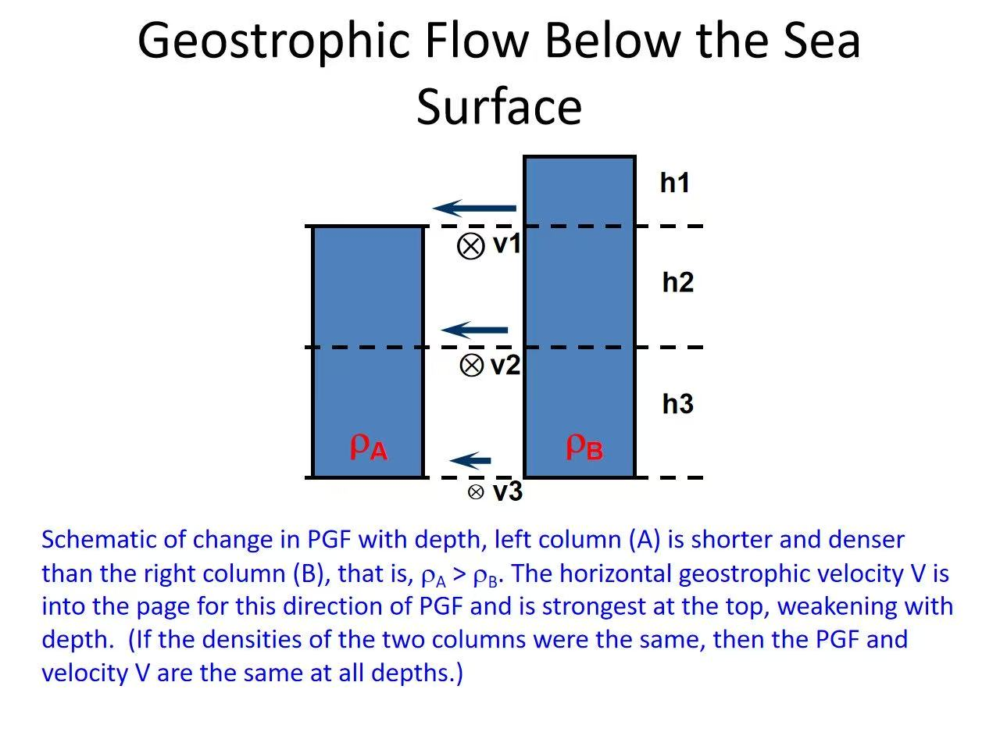
一句话：斜的等密度面 ⇒ 斜的等压面 ⇒ 地转流；等密度面越陡，切变越强。
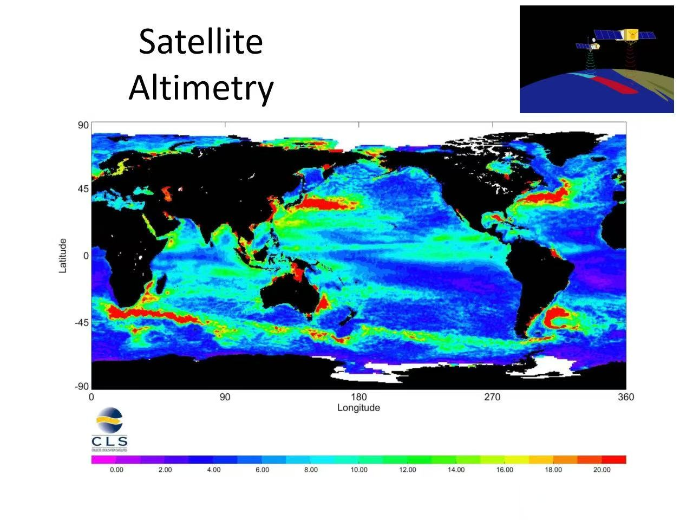
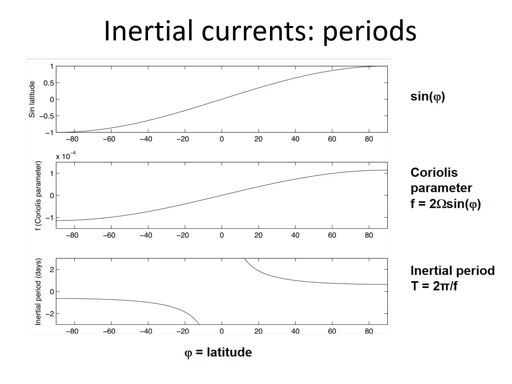
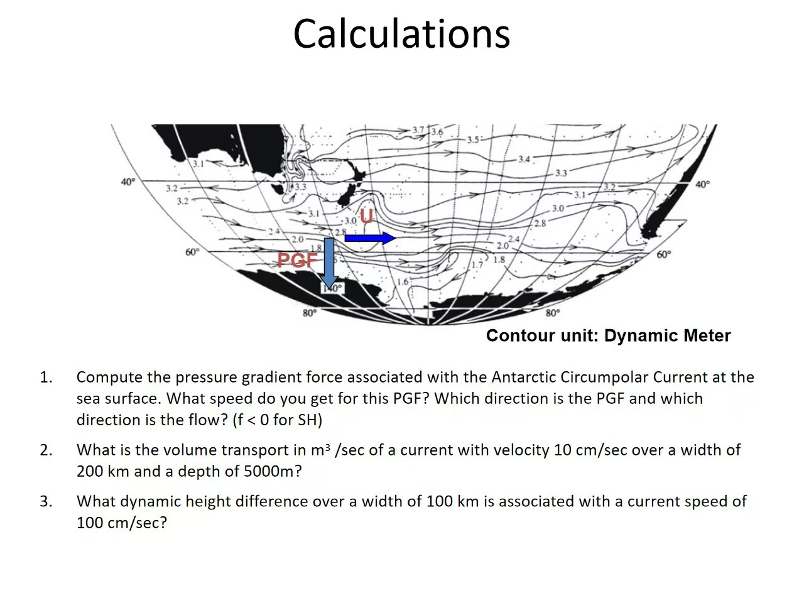
以南极绕极流为背景的三步计算（南半球 f < 0）。取 g ≈ 9.8 m·s⁻²，|f| ≈ 10⁻⁴ s⁻¹。
跨 1000 km 动力高度差约 ΔD = 1 dyn m：
流向：PGF 向南；科氏力在南半球使运动体向左偏，平衡时流向与 PGF 垂直且高值在左 → 自西向东绕极流动。
与观测一致：ACC 是全球输运最大的海流，约 100–150 Sv，把三大洋连成一体。
意义反过来用：卫星测高或动力计算只要给出约 1 dyn m / 100 km 的坡度，就对应约 1 m·s⁻¹ 的强流——这是快速估算流强的口袋公式。
单位约定：1 dyn m（动力米）= 10 m²·s⁻² 位势异常 ÷ g 后的高度量；1 Sv = 10⁶ m³·s⁻¹。三问共用同一条地转关系 v = (g/f)·∂η/∂x，分别取正算、积分、反算。
脑图被整理成可阅读的专题目录。选择左侧主题，可查看核心概念以及它与东海近岸研究的联系。
把合成截图中的每一幅图拆开解释。当前已整理 33 幅，覆盖海盆地形、海水物性与全球温盐密度结构；点击图片可查看原始截图。
先用物理可解释的经典方法提取潮汐分量和主导时空模态，再把结果作为深度学习的基线、特征或残差目标。下面的程序、数据和工具均可直接下载。
把连续水位序列表示为多个已知天文频率的正弦分量之和，估计每个分潮的振幅和相位，并将重建潮位与非潮残差分离。
[nameu,fu,tidecon,xout] = t_tide(waterLevel, ...
'interval',1,'start time',startTime, ...
'latitude',21.30669,'output','screen');
residual = waterLevel - xout;B站图文教程逐项解释 interval、latitude、start time、TIDECON 与 XOUT；南京大学讲座补充调和分析原理与应用。
把去季节、去趋势后的海洋时空异常场分解为正交空间模态 EOF 与对应时间系数 PC，按方差贡献率识别主导变化结构。
weighted = (anom * np.sqrt(np.cos(np.deg2rad(anom.lat))))
X = weighted.stack(space=('lat','lon')).dropna('space')
U, s, Vt = np.linalg.svd(X.values, full_matrices=False)numpy、xarray、netCDF4 和 matplotlib。程序使用固定分析时段，避免数据持续更新导致结果漂移。参考经典 EOF 展示的阅读顺序，把空间型、主成分和方差贡献放在同一工作台。下图是可交互的教学示意，不是 ERSSTv5 的计算结果；正式分析请运行上方 Python 程序。
第一模态强调赤道中东太平洋的盆地尺度变化，可用于建立 ENSO 型空间结构的直觉。
拖动位相会同步改变左侧空间异常的强度与符号；EOF 与 PC 同时反号不会改变重建场。
每 8 秒自动切换；悬停、聚焦或使用键盘时暂停。
数据练习来源：NOAA ERSSTv5 月平均海表温度；本交互仅演示 EOF 的结构与阅读方法，不显示未经本站程序计算验证的统计数值。
把分析结果从“数据表”变成“可讨论的图”。选择一个海洋学示例，按四步完成字段映射；示例只演示表达方式，不代替正式统计检验。
离开页面前，用 3–5 分钟回答一题。先写自己的答案，再查看核对要点；回答记录只保存在当前浏览器，不会上传。
围绕海浪与潮位预测，将观测资料、动力机制和数据驱动方法放在同一条分析链上。深度学习模型的采样间隔与预报时长应匹配目标过程的物理尺度。
区分有效波高、天文潮位、风暴增水和沿岸低频水位异常。
整合潮位站、浮标、风场、气压、流速和海底地形等资料。
先分析潮汐周期、传播时滞和天气尺度响应，再训练数据模型。
根据站点关系和空间网格选择时序网络、图网络或 Transformer。